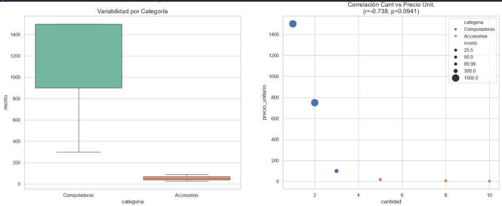
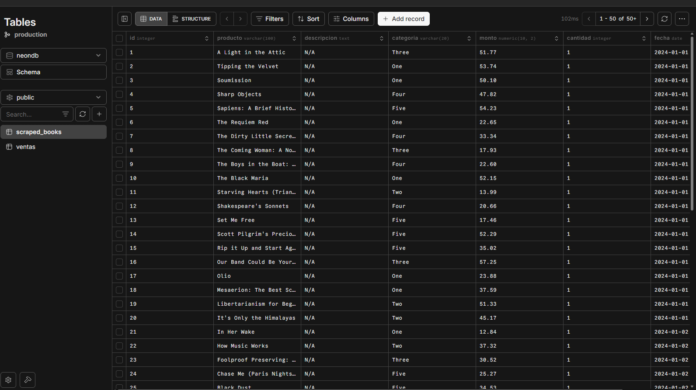

Exploratory Data Analysis
Full EDA pipeline connecting to a serverless PostgreSQL database (Neon). Includes Pearson correlation, Gaussian KDE, coefficient of variation, and publication-ready charts with matplotlib and seaborn.
01 / ABOUT
Ingeniero industrial que migró al mundo de los datos. Aprendo construyendo proyectos reales y leyendo documentación oficial — sin bootcamps, sin atajos.
Junior — aprendiendo activamente
$ python -c "import mauro"
>>> mauro.role
'Data Analyst · Industrial Engineer'
>>> mauro.stack
['Python', 'SQL', 'Pandas', 'Streamlit', 'Plotly']
>>> mauro.level
'junior — learning by building ✓'
>>> ▌02 / SKILLS
Cada herramienta aprendida construyendo
proyectos reales y leyendo documentación oficial.
03 / WORK

Full EDA pipeline connecting to a serverless PostgreSQL database (Neon). Includes Pearson correlation, Gaussian KDE, coefficient of variation, and publication-ready charts with matplotlib and seaborn.

Headless browser scraping with Playwright (Chromium) and regex cleaning. Appends structured data to PostgreSQL via pandas.to_sql with ethical rate-limiting. Secrets managed with python-dotenv.
Streamlit app with dynamic filters and 300s cache. Visualizes datasets with Plotly Express (bar, histogram, box plots). Deployed on Streamlit Cloud — no server setup needed.
Todo el código es público — construido desde cero, sin plantillas.
04 / CONTACT
Disponible para proyectos freelance de análisis de datos, limpieza de datasets, dashboards interactivos y scraping. Si tenés datos sin procesar, puedo ayudarte.